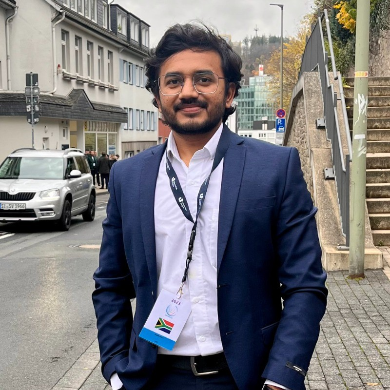

Hi, my name is
Sahil Jasani.
I engineer intelligent automation.
01. System Diagnostic (About Me)
I am an Automation & Industrial AI Engineer bridging the gap between Robust Industrial Automation (OT) and modern Industrial AI (IT). I focus on deploying hybrid architectures—from IEC 61131-3 PLC logic to Deep Learning models—building autonomous, scalable systems for the real world.
My background lies at the exact intersection of classical control theory and modern data-driven approaches. I have hands-on experience in architecting Digital Twins, Adaptive LTV-MPC, and State & Parameter Estimation frameworks for complex nonlinear systems.
Currently, my focus is developing robust Steuerungstechnik (OT) using CODESYS and TwinCAT, and bridging it with modern IT tools like Python, Docker, and IIoT protocols. My goal is to write modular, maintainable code that runs securely in continuous operation while leveraging AI for optimization.
I am fluent in English and possess B2-level German proficiency, actively utilizing it in daily technical and professional environments.
Technical Competencies
Advanced Control & Automation
Artificial Intelligence
Software & Embedded
02. Operational Log (Experience)
05/2025 - 01/2026
Master's Thesis
Festo SE & Co. KG
Esslingen, DE
Model Predictive Control for Nonlinear Industrial Systems
Grade: 1.3- ▹Implemented an Adaptive LTV-MPC for a complex MIMO plant via real-time successive linearization.
- ▹Developed an Augmented EKF (AEKF) to estimate unmeasured internal states and adapt to time-varying parameters.
- ▹Enforced hard actuator constraints in the QP solver, verifying real-time feasibility for PLC execution.
10/2020 - 05/2022
Process & Systems Engineer
Asahi India Glass
Gujarat, IN
Process Optimization & Quality
- ▹Conducted Root Cause Analysis (RCA) for automated production processes (VW, Suzuki).
- ▹Organized technical spec, procurement, and validation of automated lab equipment.
- ▹Designed workflows achieving global NABL / ISO-17025 compliance.
03. Academic Registry (Education)
2022 - 2026
M.Sc. Mechatronics
Universität Siegen
Siegen, DE
Academic Performance
Grade: 2.1Focus on Advanced Control Theory, Robotics, and Machine Learning. Master's thesis conducted at Festo SE & Co. KG focusing on Adaptive LTV-MPC and State Estimation.
2017 - 2020
B.Eng. Mechanical Engineering
Gujarat University
India
Academic Performance
Grade: 1.4 (Eq.)Foundational studies in mechanics, thermodynamics, and manufacturing processes, establishing a strong physical understanding for later control systems work.
04. Deployment Modules (Projects)
Hybrid HiL Thermal Control
Connected a Python FOPDT thermodynamics model to a CODESYS PLC via Modbus TCP. Implemented an FSM in ST and a PID loop maintaining stability within ±0.5°C.
AI-Supervised IIoT Control
Integrated a field-level PID controller with a PyTorch Autoencoder supervisor. Fused vibration/thermal data via an EKF and built an AsyncIO telemetry pipeline.
Advanced LiDAR Simulation
Supervised by Prof. Dr. Ivo Ihrke
Engineered an Object-Oriented Monte Carlo transport engine in Python modeling Henyey-Greenstein scattering, Fresnel reflection, and stochastic surface roughness.
Autonomous Warehouse Robot
Developed a ROS 2 Navigation stack simulation in Gazebo, implementing SLAM (AMCL) and A* path planning for dynamic obstacle avoidance.
Edge AI Disease Detection
Deployed a quantized CNN model on mobile edge devices using TensorFlow Lite, achieving high-accuracy real-time plant disease classification.
RAG-Based Study Assistant
Built a Retrieval-Augmented Generation (RAG) system using FAISS for semantic search and BART for text simplification to navigate complex PDF technical docs.
05. What's Next?
Get In Touch
I am currently open to new opportunities in Automation and Industrial AI across Germany and beyond. Whether you have a challenging control problem or just want to connect, my inbox is open.
Initiate Handshakejasanisahil11@gmail.com
Phone
+49 175 645 8087
Location
Stuttgart, Baden-Württemberg, DE
linkedin.com/in/sahiljasani